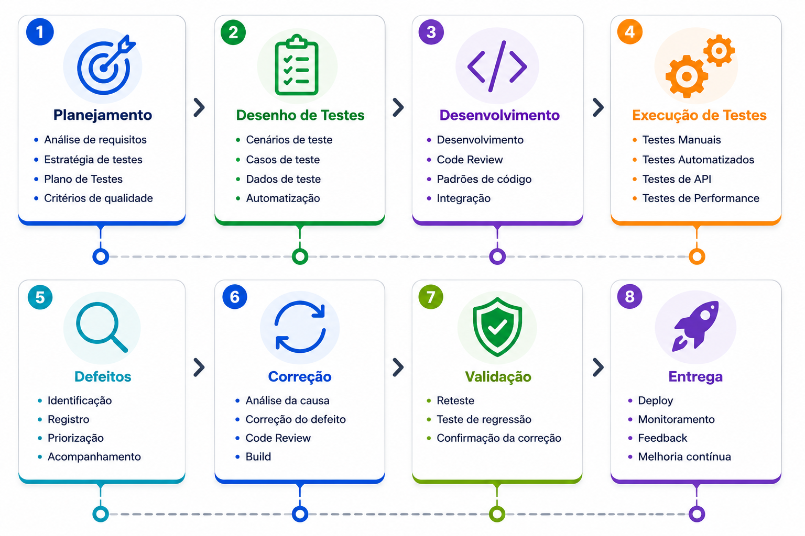
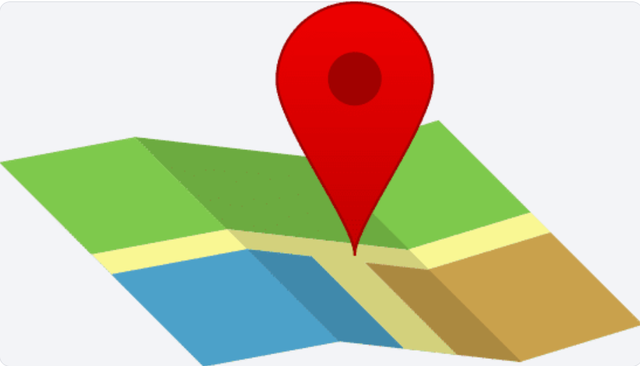

Joarez Rosa
Senior QA Engineer
Software quality analyst | Test Automation | Playwright & Robot Framework
API & E2E | Software Quality & Reliability
RESUMO PROFISSIONAL
Formado em Sistemas de Informação com mais de 9 anos de experiência na área de Tecnologia da Informação. Atuação com foco em testes de software, tanto manuais quanto automatizados, validação de APIs, além de sólida experiência em sistemas financeiros e soluções voltadas à saúde. Familiaridade com metodologias ágeis e utilização de ferramentas modernas para automação, integração contínua e controle de qualidade.
OBJETIVO PROFISSIONAL
Atuar na área de Qualidade de Software, aplicando minha experiência como Engenheiro de Qualidade, Engenheiro de Automação de Testes, Tester, Analista de Qualidade ou Software Quality Analyst, integrando uma equipe comprometida com inovação, qualidade e eficiência.
Competências Técnicas
Principais Tecnologias e Ferramentas
🧪 Automação
Playwright • Robot Framework • Cypress
🔌 APIs
Postman • Bruno • Insomnia • Swagger
⚙️ CI/CD
Jenkins • Azure DevOps
📋 Gestão
Azure DevOps • Octane • Jira/Zephyr
💻 Linguagens
Java • Python • JavaScript • SQL
🗄️ Bancos
SQL Server • MySQL • PostgreSQL • Firebird.
Experiência Profissional
🏢 MJV Soluções em Tecnologia
ASSESSOR ESPECIALISTA TECNOLOGIA
Automação Web, APIs, CI/CD, sistemas financeiros e estratégia de qualidade.🏢 MJV Soluções em Tecnologia
ASSESSOR ESPECIALISTA TECNOLOGIA
Testes funcionais, APIs, automação e validação de sistemas críticos.💻 Labsit Inteligência Digital
Engenheiro de Testes
Planejamento e execução de testes, automação e qualidade contínua.🎓 Sponte Informática
Analista de Qualidade
QA, suporte técnico, migração de dados e evolução de processos.Projetos & Cases de Qualidade
🤖 Automação de Testes
Implementação de automação Web e E2E, aumentando cobertura de testes e reduzindo tempo de validação.
🔌Testes de APIs
Validação de serviços REST, contratos de integração e qualidade de dados.
⚙️Qualidade Contínua
Integração dos testes em pipelines automatizados para entrega contínua.
🏦 Plataformas Financeiras e Saúde
Experiência em testes e qualidade de sistemas de alta criticidade, garantindo estabilidade, segurança e confiabilidade em aplicações financeiras e de saúde.
Fluxo de Qualidade
A qualidade é construída de forma contínua durante todo o ciclo de desenvolvimento. O fluxo abaixo representa as principais etapas aplicadas em projetos Web, Mobile e APIs, desde o planejamento até a entrega e acompanhamento dos resultados.

Formação Acadêmica
Minha formação combina Tecnologia da Informação e área da Saúde, proporcionando uma visão analítica, foco em processos, atenção aos detalhes e qualidade na execução das atividades.
Bacharel em Sistemas de Informação
Faculdade Mater Dei
Conclusão: 2017Técnico em Enfermagem
SENAC
Fev/2003 a Abr/2004Auxiliar de Enfermagem
SENAC
Jan/2000 a Jul/2001Ferramentas & Ecossistema
Principais ferramentas utilizadas em automação de testes, APIs, CI/CD, gestão de qualidade e validação de aplicações.
Playwright
Automação WebRobot Framework
Web | MobilePostman
API TestingAzure DevOps
Gestão Ágil | CI/CD
Jira
Gestão Ágil
Jenkins
Integração ContínuaAppium
Mobile TestingBrowserStack
Cross BrowserContato
Vamos conversar sobre Qualidade de Software, Automação de Testes, Projetos e oportunidades profissionais.
joarezrosa.rosa@gmail.com
LinkedIn ↗
Ver Perfil Profissional
Portfólio
joarez.github.io/Portfolio

Localização
Pato Branco • Paraná • Brasil
Telefone
+55 (46) 99912-5965